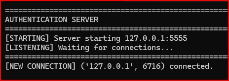
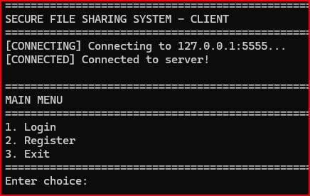
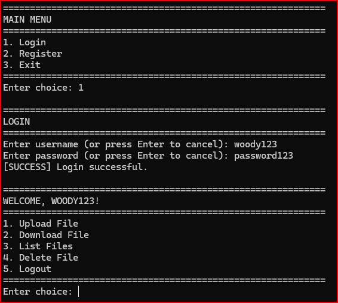
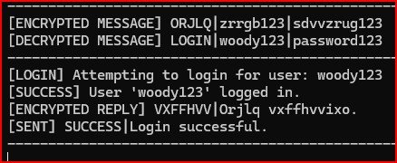
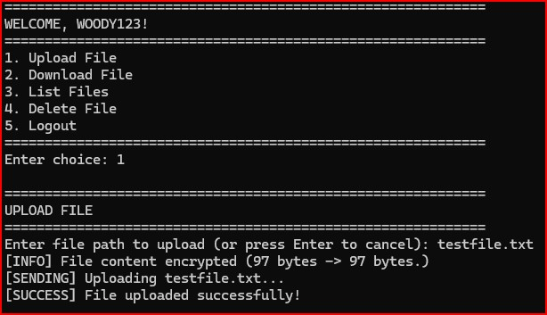
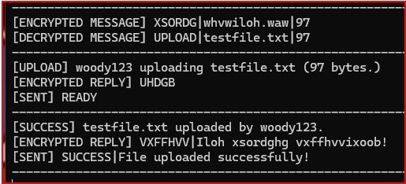
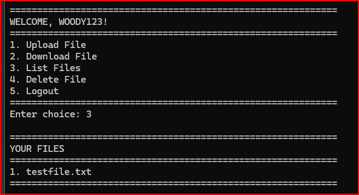
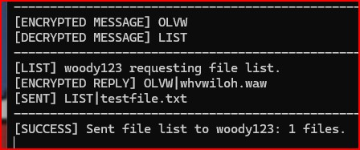

Executive Summary
Cybersecurity undergraduate at Old Dominion University (3.9 GPA) with CompTIA Security+, Network+, and A+ certifications. Currently conducting undergraduate AI security research under Dr. Ayan Roy (CNU) through the CCI Undergraduate Research Program, developing multi-agent LLM frameworks for elder-fraud detection. Background includes over a decade in high-risk, regulated financial environments, now applied to cybersecurity disciplines including incident response, system hardening, and AI governance.
🔬 Featured Research
Mentored by Dr. Ayan Roy (Christopher Newport University) • CCI Undergraduate Research Program
COVA Framework
Under ReviewMulti-agent LLM framework for generating labeled synthetic scam conversations targeting elder populations. Established baseline classification using XGBoost + TF-IDF achieving 72.5% accuracy across 8 elder-fraud categories.
COVA-X Benchmark
Under ReviewExpanded benchmark with 10,985 synthetic conversations. Fine-tuned Longformer achieving 79.71% accuracy and 0.779 macro-F1, advancing the state of elder-fraud detection research.
ScamLingua Platform
LiveSelf-built distribution platform for COVA research datasets and benchmarks. Designed with trust-focused web engineering principles to support reproducible AI safety research.
📊 Technical Skills
-
Certifications:
CompTIA Security+, Network+, A+; Linux+ (In-Progress) -
AI/ML Research:
LLMs, Synthetic Data Generation, Transformer Fine-Tuning, Dataset Engineering, Ollama/Qwen Local Inference -
Cybersecurity:
Incident Response, System Hardening, Network Defense, AI Governance, Vulnerability Assessment -
Tools:
Nmap, Wireshark, pfSense, tcpdump, Snort, iptables, SSH -
Development:
Python, Trust-Focused Web Engineering, HTML/CSS/JS, SQL, GitHub
📊 Skill Distribution
🧠 Education
Old Dominion University
B.S. Cybersecurity | GPA: 3.9
CCI Undergraduate Research Program
Jax Code Academy
Web Development | 2023 Graduate
Roanoke College
B.A., Criminal Justice & Philosophy
💻 Featured Project
Secure File Sharing System
Python TCP Sockets • Milestone Project








Problem Addressed
Organizations routinely transfer sensitive data over insecure channels, creating exposure to interception and tampering. This project explores secure design principles for client–server exchange.
System Design
- Custom TCP client–server architecture in Python
- User authentication & directory isolation (DAC)
Security Controls
- Encrypted communication channel
- Data‑integrity validation during transfer
🛡️ Labs & Applied Coursework
Incident Response & Forensics (NIST SP 800‑61)
Executed full IR lifecycle after simulated brute‑force: recon detection with Nmap, log analysis, volatile data collection, and GPO remediation.
Operating System Hardening & Policy Enforcement
Strengthened Windows/Linux security baselines via Group Policy Objects, authentication auditing, and attack surface reduction using iptables.
Network Defense & Firewall Security (pfSense)
Applied defense‑in‑depth via firewall rule design, disabling insecure protocols, and configuring SSH for encrypted administrative access.
Intrusion Detection & Packet Analysis (Snort / Wireshark)
Deployed Snort IDS and analyzed PCAP traffic using tcpdump and Wireshark to identify anomalous behavior.
🧩 Professional Experience
Cardinal Housing, LLC | Estate Fiduciary
Jacksonville, FL | 2012 – 2024
- Fiduciary Trust: Managed real estate portfolio for 12+ years; served as fiduciary for two private estates overseeing 100% of legal, financial, and physical asset distribution.
- Compliance & Data Integrity: Ensured full adherence to housing regulations and probate laws through meticulous record-keeping.
BlueHub Capital (SUN) | Foreclosure Relief Underwriter
Boston, MA | 2021 – 2022
- Supported internal bank examinations & compliance audits, safeguarding corporate financial interests.
- Redesigned loan origination workflows, improving data integrity and operational efficiency.
- Led deployment of a secure SMS communication platform maintaining privacy compliance.
EverBank & TIAA Bank | Loss Mitigation Underwriter
Jacksonville, FL | 2017 – 2021
- Reviewed complex loan files for federal compliance, mitigating financial risk exposures.
- Maintained 97% average on Quality Reports, ensuring OCC Consent Order compliance.
- Managed loan portfolio 3x the average workload with 95% accuracy.
Everbank & Ditech Financial | SPOC Relationship Manager
Jacksonville, FL | 2011 – 2014
- Managed foreclosure prevention as Single Point of Contact (SPOC) in regulated financial environments.
- Exceeded investor benchmarks by 30% through workflow optimization.
- Maintained 99% quality score on monitoring reports.